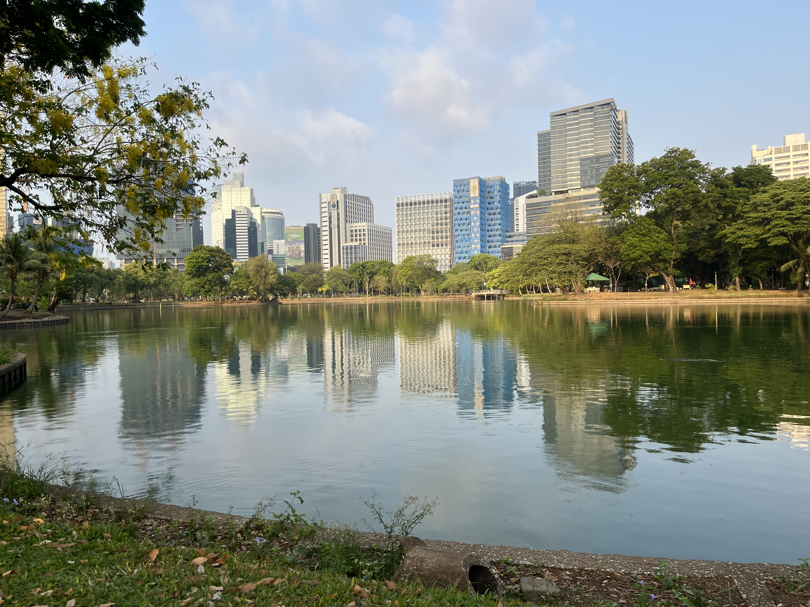
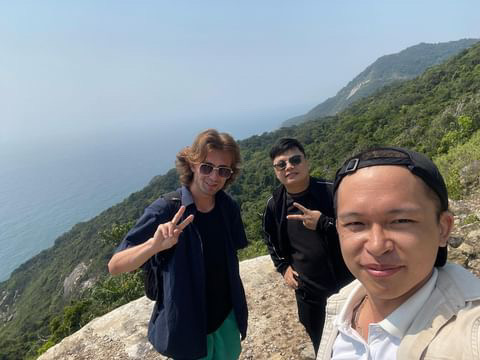
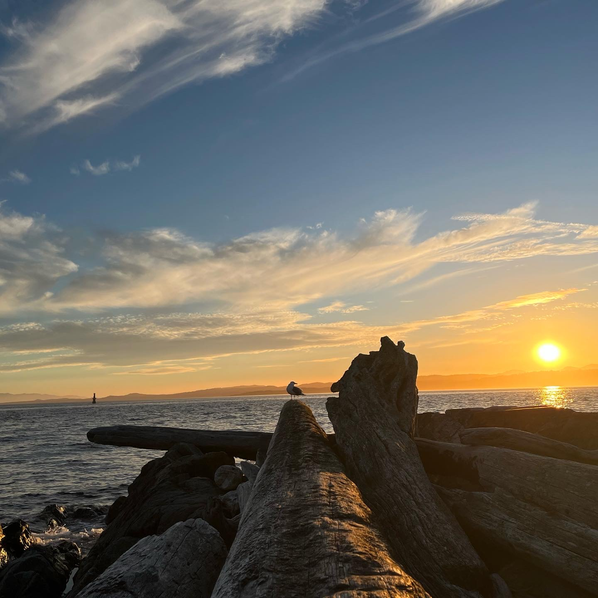

Bangkok, Thailand
I visited Bangkok in April of 2024. It was the start of a month long trip I did where I explored a bit of Thailand and Vietnam. Bangkok was a perfect introduction to South East Asia. The heat immediatly hit me as I got off the plane, and when I stepped outside the airport to find a taxi, I thought I might have accidentally stepped into some strange sauna. Totally disoriented from the new weather, my first day involved being scared to go out into the unknown, to try and speak a new language, to make a bit of a fool of myself, and most importantly, to make some memories. After heading to a cafe across from my hotel and immediatly striking up a conversation with some locals, I quickly found out there was nothing to fear. The food, the maze of alleys, street markets seemingly every few blocks, the smells tempting me into restaurants and also wafting up from the cracks in the sidewalk, the smiles, and the screaming birds and the music and people, all of it coming together in such a differnet way than I had ever seen, was such a memorable experience.
Cham Island, Vietnam
I visited vietnam for about 9 days. Not nearly long enough. Luckily i got to spend a good 3 days of this time in Da-Nang, a coastal city in the middle of the country. Here I experienced some amzazing beaches, 20 dollar a night hotels with a overtone of luxury, and some great food. Yet, I was looking for something a bit more rustic. A bit more off then path. So I headed to a homestay located in a small fishing community on the nearby, Cham Island. Here, I stayed with a lovely family of 5 and enjoyed a fantastic seafood dinner with them. All freshly caught that morning and prepared beautifully. The next morning, I met two buisness men from da-nang, taking a weekend relaxation trip. We took motorbikes across the island, navigating roads littered with massizve boulders from rock slides that had occured through the decades. We capped off our trip exploring the shallows of the local beach.
Victoria, Canada
Victoria is my favourite city in Canada. I lived there for a year and a half, and I love visiting. The nature is breathaking and very hard to beat. The combination of the rainforest and the ocean really does something special.
